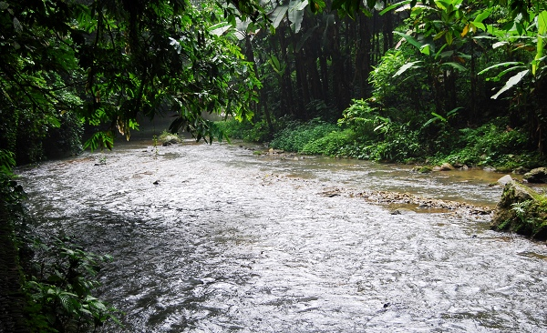

广西通灵大瀑布
首页
抱朴守静
#1 广西通灵大瀑布 作者：有志青年 发表时间：2007-8-14 20:10:02
今天上午拍摄通灵瀑布边的水时，将相机放在路边的岩石上定时拍摄，出了几张感觉还可以的照片。
前往通灵瀑布的路边拍摄，自动不闪光拍摄模式

光圈放在25-29上拍摄的水

和当地的壮族导游合影的照片
回来的路上车内拍摄
#2 Re:广西通灵大瀑布 作者：逆刃 发表时间：2007-8-14 20:16:23
很美啊.拍得也不错.有志全能啊!
#3 Re:广西通灵大瀑布 作者：有志青年 发表时间：2007-8-14 20:18:49
正在上北京摄影学院的函授班，准备交作业的
#4 Re:广西通灵大瀑布 作者：逆刃 发表时间：2007-8-14 20:22:56
 有机会也跟你学学,哈哈俺也喜欢摄影啊!
有机会也跟你学学,哈哈俺也喜欢摄影啊!
#5 Re:广西通灵大瀑布 作者：黄药师 发表时间：2007-8-16 1:37:50

#6 Re:广西通灵大瀑布 作者：无尽 发表时间：2007-8-16 8:08:05
很美的景色！拍得不错啊~
#7 Re:广西通灵大瀑布 作者：星月族 发表时间：2009-12-28 11:48:54
相似度:98%